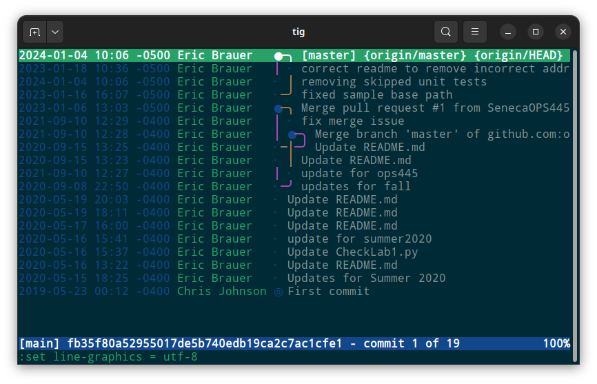

Introduction to Git and GitHub
Eric Brauer
Has This Ever Happened to you?

The Problem, Explained
When we are collaborating on a document/file/codebase, we need to track changes. Creating new copies of a file is confusing. Adding more collaborators and files will increase the complexity and introduce lots of confusion.
What is Git?
Git is a program we can install on our Linux machine. It tracks changes on a directory.
Features of Git
- Only the latest ‘version’ of a file is visible.
- However, we can ‘rewind’ back to any previous version.
- Also tracks who has made changes.
- Handles ‘collisions’ when two people have made changes to the same file.
- You can also choose to ‘push’ a copy of the directory (and its changes) to a remote server. This is called creating a repository.
What is GitHub?
GitHub is a website that hosts many repositories, usually for free. It has become a popular choice for programmers when they are trying to choose a place to store their work.
In addition, it has a lot of features such as issues, team management, Wikis, Continuous Integration tools, etc.
Not every git repo is stored on GitHub!
Local / Remote
- Remote hosting allows us to have a backup in case our local machine fails.
- Team members (or users!) will be able to access the latest version of the software from anywhere.
Setting Up A GitHub Account
- Choose a username, password, enter an email address (same as setting up almost any online account).
Setting Up Git
Use git config to specify your name and your email
address (so that we know who to blame for a specific change!)
Use your myseneca email address, otherwise you may not get full credit for your work.
Setting Up Git: Add Your Public Key to GitHub
In order to sync with GitHub, we need to generate a public/private keypair, and then store the public key on GitHub.
This is the same as using SSH to log into a remote Server.
- Use
ssh-keygento generate keys on the machine you will be using to complete labs. (Fedora VM) - Copy the contents of the public key to your clipboard. (Ctrl+Shift+C will copy from a terminal)
- Paste the key into GitHub under Settings -> SSH & GPG Keys
Git Clone
We are ready to grab the contents of an existing repository and copy it to our local machine.
Git Clone
Use git clone + the URL from GitHub (Ctrl+Shift+V will
paste into a terminal)
You should now be able to cd into the directory you have
created.
Checking Your Work: Git Status
Use git status to check your work as you go. Reading and
understanding this output will help you a lot!
Git Status
On branch master- this semester, all of your commits can be done on the main branch, called ‘main’ or ‘master’ branch
up to date with origin/master-
origin/masteris the remote repository. This tells you that remote and local versions are the same. nothing to commit- you haven’t made any local changes, so there’s nothing to do yet.
Tracking Changes
- Make your changes to
example.py, save the file. git statusto see what has changed.git add example.pyto include this file in what you want to track.git statusonce again! What has changed?git commit -m "made my first change"git statusyet again, believe it or not..
Tracking Changes

Rules For Commits
Any significant change should have its own commit. This helps if your change broke something important and we need to roll back the change.
Pushing Your Commits
Using git push will sync your commits with the remote
repository.
Git Log
- From the terminal, run
git logto view all your commits. - You can also view these on GitHub.
- Notice that commits are labelled with a hash, for example 01b8dac.
Checking Out Previous Commits
- Every change is tracked, and you can choose to look at the previous state of your code.
- Use
git checkout <hash>where hash refers to the commit you wish to view. - Are you done? Use
git checkout masterto return to the “head” of your master branch.
Undoing Commits
If you break your code, you may need to undo your latest commits.
There are several ways to do this, but the most direct is to use
git reset --hard <hash>
This will remove the commits that came after the hash commit. Be warned!
For other (less destructive but more complicated) options, check this page
What does it look like when you work in a group?
- Chris and Michael have both cloned the same repo
- Chris commits a change and pushes at 9:00 am.
- Michael commits a changes and tries to push at 12:00 pm and gets an error:
Warning: origin/master has diverged
Your local version of the code doesn’t yet have Chris’s commit!
Git Pull
- Michael uses
git pullto sync Chris’s changes before you create your commits. This helps prevent 90% of problems! - You might also need to use
git pull --rebase. This eliminates the need for a merge
Group Work
what happens if Chris and Michael change the same code?
instead of any person’s change overwriting the other, git will force you to merge your changes
What Merging Looks Like (It Sucks)
Branches
- On a team, reduces the amount of merging that needs to happen
- Create a new branch for each new feature
- main should be stable code
Create A Branch
On GitHub, find the top of your repo page. Click the drop-down to create a new branch based off of main:
From the terminal, you can use a command:
git checkout -b <new branch>The checkout command is also used to switch between
branches.
Merging Branches
On GitHub, once you’ve created (and pushed) commits, you can choose to merge a branch by finding this message at the top of the repo:
This will begin a pull request, where your branch undergoes final approval.
Pull Request
- This is the process where a branch’s changes become part of main.
- Often this will require code review and approval.
More Help
- Git can be a very complex tool. It’s easy to break things, but it gets easier with practice.
- Did you make a mistake?
- Oh Shit, Git! is a useful webpage to look at, it runs through some nightmare scenarios when you have done something weird.